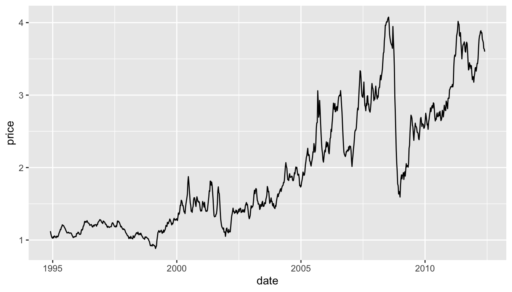

Data Wrangling
Reading Files
Project Management
- Important to understand your file structure and where you save everything
- Working directory
- “Default location where R will look for files you want to load and where it will put any files you save” source
- Easiest way to set Working Directory:
- Session -> Set Working Directory -> Choose Directory
- Point and Click Method
Excel
Data Files in Excel
Formats .xls and .csv - what’s the difference?
File extensions .xls and .xlsx are proprietary Excel formats, binary files
csv is an extension for Comma Separated Value files. They are text files - directly readable.
Motivating Example: Gas prices in the Midwest since 1994
MOTIVATING EXAMPLE
Gas Prices in the Midwest
| Year-Month | Week 1 | …3 | Week 2 | …5 | Week 3 | …7 | Week 4 | …9 | Week 5 | …11 |
|---|---|---|---|---|---|---|---|---|---|---|
| NA | End Date | Value | End Date | Value | End Date | Value | End Date | Value | End Date | Value |
| 1994-Nov | NA | NA | NA | NA | NA | NA | 28-Nov | 1.122 | NA | NA |
| 1994-Dec | 5-Dec | 1.086 | 12-Dec | 1.057 | 19-Dec | 1.039 | 26-Dec | 1.027 | NA | NA |
| 1995-Jan | 2-Jan | 1.025 | 9-Jan | 1.046 | 16-Jan | 1.031 | 23-Jan | 1.054 | 30-Jan | 1.055 |
| 1995-Feb | 6-Feb | 1.045 | 13-Feb | 1.04 | 20-Feb | 1.031 | 27-Feb | 1.052 | NA | NA |
| 1995-Mar | 6-Mar | 1.053 | 13-Mar | 1.042 | 20-Mar | 1.048 | 27-Mar | 1.065 | NA | NA |
What’s the difference read_csv vs. read_* ??
read_csv is just one way to read a file using the readr package:
read_delim: the most generic function. Use thedelimargument to read a file with any type of delimiterread_tsv: read tab separated filesread_lines: read a file into a vector that has one element per line of the fileread_file: read a file into a single character elementread_table: read a file separated by space
Your Turn
Have a look at the parameters of read_csv to solve the following problems:
Read the first two lines of the file into an object called
midwest_namesRead everything EXCEPT the first two lines into an object called
midwest_data
Hint: Visit http://unl-statistics.github.io/R-workshops/r-format/data/midwest.csv to download the data into your current working directory (getwd()) and look at it in Excel to help figure out what the issue is.
Your Turn Solutions
Quick Lesson in Data Cleaning
library(lubridate) # works with dates
library(tidyverse)
values <- c(midwest_data$X3, midwest_data$X5, midwest_data$X7,
midwest_data$X9, midwest_data$X11)
dates <- c(paste(midwest_data$X1, midwest_data$X2, sep = "-"),
paste(midwest_data$X1, midwest_data$X4, sep = "-"),
paste(midwest_data$X1, midwest_data$X6, sep = "-"),
paste(midwest_data$X1, midwest_data$X8, sep = "-"),
paste(midwest_data$X1, midwest_data$X10, sep = "-"))
dates <- dates[!is.na(values)] #removing NAs
values <- values[!is.na(values)] #removing Nas
dates <- ymd(dates)
midwest_gas <- data_frame(date = dates, price = values)
midwest_gas <- arrange(midwest_gas, dates)Now we can make a plot!
Reading Excel Data
Download the midwest.xls file to your current working directory (getwd())
Something isn’t quite right here…
| Year-Month | Week 1 | ...3 | Week 2 | ...5 | Week 3 | ...7 | Week 4 | ...9 | Week 5 | ...11 |
|---|---|---|---|---|---|---|---|---|---|---|
| NA | End Date | Value | End Date | Value | End Date | Value | End Date | Value | End Date | Value |
| 1994-Nov | NA | NA | NA | NA | NA | NA | 39779 | 1.1220000000000001 | NA | NA |
| 1994-Dec | 39786 | 1.0860000000000001 | 39793 | 1.0569999999999999 | 39800 | 1.0389999999999999 | 39807 | 1.0269999999999999 | NA | NA |
Reading Excel Data: Attempt #2
The 2nd row of the excel file also contains variable names.
Let’s skip the first this time. We can then rename the first column.
| Year-Month | End Date...2 | Value...3 | End Date...4 | Value...5 | End Date...6 | Value...7 | End Date...8 | Value...9 | End Date...10 | Value...11 |
|---|---|---|---|---|---|---|---|---|---|---|
| 1994-Nov | NA | NA | NA | NA | NA | NA | 2012-11-28 | 1.122 | NA | NA |
| 1994-Dec | 2012-12-05 | 1.086 | 2012-12-12 | 1.057 | 2012-12-19 | 1.039 | 2012-12-26 | 1.027 | NA | NA |
| 1995-Jan | 2012-01-02 | 1.025 | 2012-01-09 | 1.046 | 2012-01-16 | 1.031 | 2012-01-23 | 1.054 | 2012-01-30 | 1.055 |
Better, but not yet perfect…
Other Data Types
haven Package
Other file formats can be read using the functions from package
havenSPSS:
read_spssSAS:
read_xptStata:
read_dta
Useful Packages for Other Data Files
foreignpackage reads from Minitab, Systat, etc. files.rgdalpackage reads shapefiles (for maps)sfpackage reads arcgis files, etc. sf package

R knowledge Spatial, by Allison Horst
Your Turn (~2 minutes)
The NHANES (National Health and Nutrition Survey) publishes data in the SAS xport format:
https://wwwn.cdc.gov/Nchs/Nhanes/continuousnhanes/default.aspx?BeginYear=2013
Scroll to the bottom, choose one of the datasets (Demographics, Examination, etc.). Download the Data file (XPT)
Use
read_xpt()to load the file into RBriefly examine the dataset you’ve imported (use
headortail, etc)
Solution
# A tibble: 2 × 48
SEQN SDDSRVYR RIDSTATR RIAGENDR RIDAGEYR RIDAGEMN RIDRETH1 RIDRETH3 RIDEXMON
<dbl> <dbl> <dbl> <dbl> <dbl> <dbl> <dbl> <dbl> <dbl>
1 62161 7 2 1 22 NA 3 3 2
2 62162 7 2 2 3 NA 1 1 1
# ℹ 39 more variables: RIDEXAGY <dbl>, RIDEXAGM <dbl>, DMQMILIZ <dbl>,
# DMQADFC <dbl>, DMDBORN4 <dbl>, DMDCITZN <dbl>, DMDYRSUS <dbl>,
# DMDEDUC3 <dbl>, DMDEDUC2 <dbl>, DMDMARTL <dbl>, RIDEXPRG <dbl>,
# SIALANG <dbl>, SIAPROXY <dbl>, SIAINTRP <dbl>, FIALANG <dbl>,
# FIAPROXY <dbl>, FIAINTRP <dbl>, MIALANG <dbl>, MIAPROXY <dbl>,
# MIAINTRP <dbl>, AIALANGA <dbl>, WTINT2YR <dbl>, WTMEC2YR <dbl>,
# SDMVPSU <dbl>, SDMVSTRA <dbl>, INDHHIN2 <dbl>, INDFMIN2 <dbl>, …